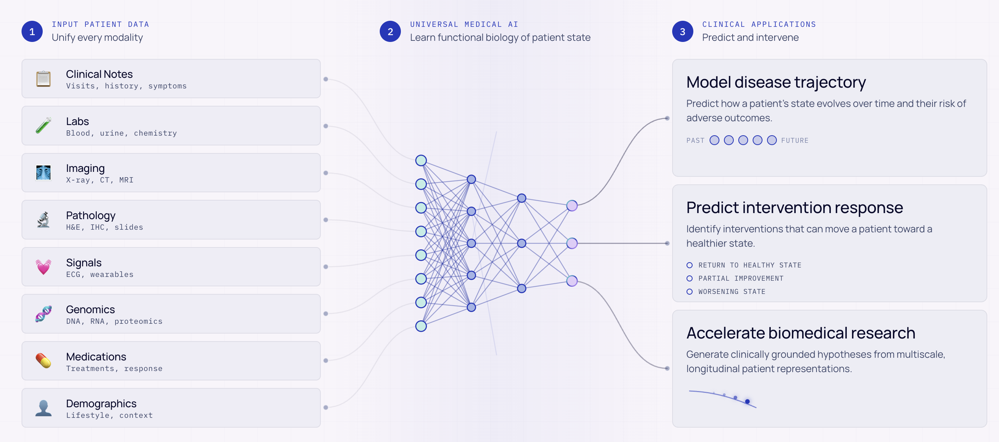
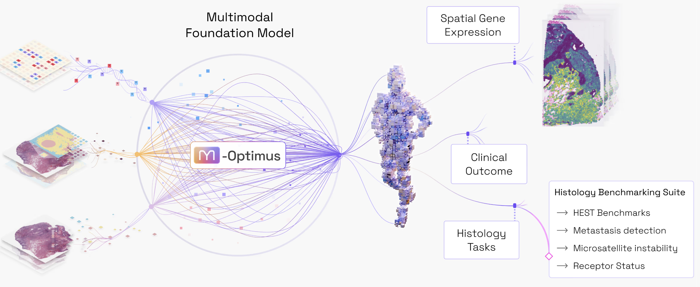
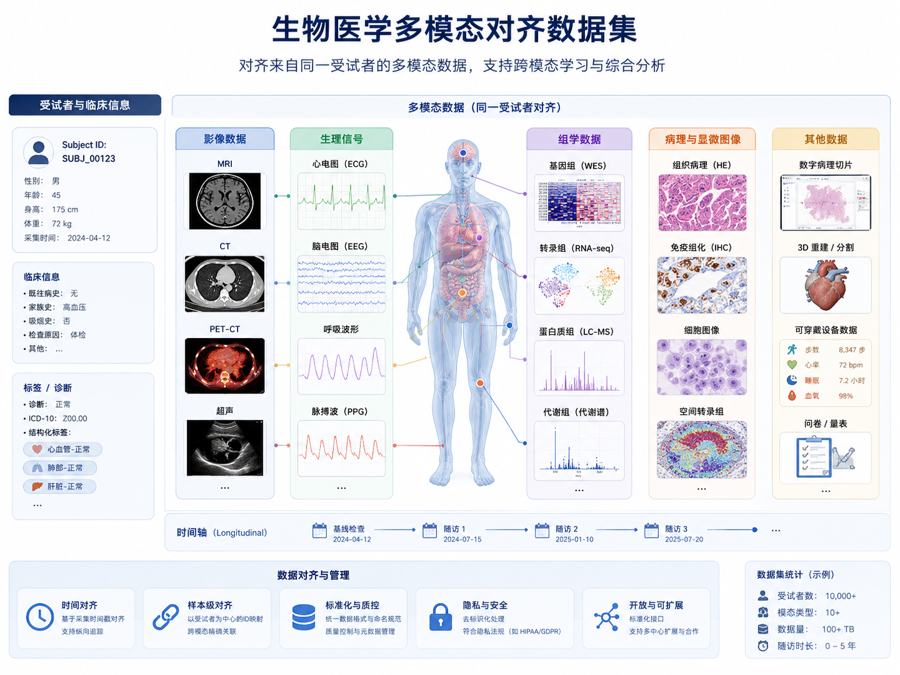

01｜核心结论：稀缺的不是“数据”，而是“可学习的对齐数据”
当前生物医学多模态模型的核心限制，既非算法表达力的短缺，亦非算力算网的不足，而是不同模态数据之间的“配对密度 (Alignment Density)”。 只有当形态学、分子图谱与临床终点在同一患者、同一细胞、同一时间轴上交汇，数据才能转化为模型可训练的“生物世界规律”。
网络公开可爬取，单样本生成边际成本趋近于 0。各模态共享语义空间。
依赖高复杂度手术与前沿测序，单样本边际成本高达 $10K+，物理空间存在孤岛。
02｜多模态基础模型的兴起与必然
人类疾病并不是一个单一模态的产物。一个肿瘤微环境中，物理形态、局部细胞空间邻域、基因组突变、RNA 转录状态和蛋白质表达共同构成了疾病状态的全部维度。 单一模态（如仅有 Bulk RNA 测序或仅有 H&E 染色切片）只能提供局部的二维折射。 生物医学基础模型 (FMs) 必须具备跨尺度的融合能力，才能从相关性走向因果机制的推断。


03｜结构性缺口：生物医学数据集缺失的八大维度
生物医学的“数据缺口”不仅表现为简单的数量不充裕。在临床合规、物理对齐、纵向追踪以及元数据质量等八个关键维度，均存在系统性短缺：
| 缺失维度 | 临床实际表现（融合“病理、影像与生理”） | 对模型开发的影响 | 推荐解决/质控指标 |
|---|---|---|---|
| 模态缺失 (Modal Gap) | 只拥有临床病历，缺乏配对的组学与病理图像；**临床上大量的CT/MRI/PET影像及ECG/EEG高频生理信号与病理、基因组等高维组学数据处于极度割裂状态，配对患者比例不足1%**。 | 模型无法建立“宏观解剖(影像) - 细胞结构(病理) - 分子机制(组学)”的跨尺度关联，也无法捕捉“动态时序(生理) - 静态分子快照”的跨时间隐性对齐。 | 各模态样本共现度、多模态配对完整比、多向稀疏表对齐率。 |
| 标签稀疏 (Outcome Scarcity) | 患者随访不全，治疗终点数据缺失或标准异质；**影像报告多为定性描述，缺乏精准的RECIST肿瘤体积变化定量标签；生理信号监测记录中缺乏心脏骤停或癫痫发作等临床危机事件的精准时间戳标注**。 | 缺乏高质量 Ground Truth，导致自监督模型学到的影像三维特征或高频生理波形难以有效微调，无法稳定预测精确预后或药物动力学反应。 | 随访终点完整率、定量影像指标标注覆盖率、时序事件标注精度。 |
| 空间错位 (Spatial Mismatch) | 组织切片取样点与空间转录组学测序点发生微米级物理错位；**三维医学影像的毫米级体素(Voxel)与组织切片（微米级）和组学点（亚微米级）存在极端的尺度跨越，活检穿刺路径在影像上的空间定位往往存在物理偏差**。 | 跨模态对比学习噪声急剧上升，像素级或体素级跨尺度对齐几乎不可能，强行对齐极易拟合因组织剪切、缩水或穿刺形变引入的空间噪声。 | 物理配准重叠百分比、多物理尺度分辨率差值、穿刺误差三维向量偏角。 |
| 纵向缺失 (Longitudinal Gap) | 标本仅为诊断时刻的单点切除切片；**高频生理电信号（如ECG/EEG，毫秒级时序）与诊断瞬间的“静态组学/病理快照”之间存在严重的时间尺度不匹配，且极度缺乏治疗前、中、后多时点影像随访数据**。 | 模型沦为静态分类器，无法捕捉到生理波形中瞬态发生的疾病突变前兆，也无法在统一时间轴上建立从宏观病变进展到微观分子演变的因果追踪链条。 | 前瞻性多时点随访密度、高频时序采样时长、多时段影像复查匹配度。 |
| 人群偏倚 (Population Bias) | 数据主体局限于少数发达地区三甲中心，缺乏发展中地区和少数族裔代表；**高端多导联生理监测和高场强MRI设备在基层不普及，导致样本严重偏向特定病人群体，影像与生理数据存在隐性的“设备-人群 confounds”**。 | 模型外部泛化极差。影像和生理模型在跨设备（如低端CT/便携式ECG）和非特异性基层人群部署时，由于数据分布发生强烈漂移，导致假阳性和假阴性率剧增。 | 亚组覆盖率、不同设备制造商样本熵、多中心外部验证泛化指数。 |
| 元数据不足 (Metadata Scarcity) | 缺少详细溯源记录；**影像DICOM中常缺失扫描仪磁场强度(1.5T/3T)、扫描层厚、对比剂注射时相；生理信号中常缺少通道电极阻抗、硬件滤波参数、电极贴敷解剖部位等核心元数据**。 | 模型极易产生“捷径学习”(Shortcut Learning)，即通过拟合特定品牌扫描仪的重建算子噪声、或特定心电仪器的电磁滤波杂音来取得虚高表现，而非学习真实的病理特征。 | 关键实验/影像元数据完整率、生理电参数标定比、标准OMOP/FHIR映射率。 |
| 溯源追踪缺失 (Provenance Mismatch) | 最初取材到生成特征嵌入的阶段版本混沌不清；**影像在PACS传输中常遭遇有损压缩失真，生理信号在降阶采样、带通滤波、去除肌电/基线漂移等预处理过程中的运行脚本和参数无法回溯**。 | 实验结果不可复现，无法审计数据处理流水线中人为过滤所带来的信息丢失或噪音伪影，导致模型评估无法排除预处理步骤带来的虚假关联。 | 数据谱系(Lineage)节点完整性、信号预处理 pipeline 版本一致性。 |
| 同意权与使用范围限制 (Consent Limitation) | 伦理同意不明确且缺少机器可读性；**三维面部CT/MRI重建具有肖像隐私泄漏风险，DICOM元数据中易残留PHI；生理电信号（如EEG）甚至包含了高度个性化的脑波生物特征指纹**。 | 数据跨境流通与跨中心共享阻力极大，多中心影像与生理序列模型无法通过简单的数据聚拢进行大规模预训练，阻碍了“大模型飞轮”的建立。 | 机器可读Consent覆盖率、隐私脱敏核查通过率、去隐私化重构抵抗力。 |
临床前沿模态解构：影像数据与生理信号的缺口剖析
除了组织病理切片 and 高维分子组学外，宏观维度的临床影像数据（如 CT、MRI、PET-CT）与高频时序维度的生理信号（如 ECG 心电图、EEG 脑电图、监护仪时序数据）也是生物医学多模态模型不可或缺的拼图，然而它们在数据融合与对齐中面临特殊的缺失与工程瓶颈：
临床CT/MRI/PET等影像的三维空间分辨率多为毫米级 (Voxel-level)，而病理切片（微米级）和空间转录组/蛋白质组学（亚细胞级）则是微米至纳米级。物理尺度跨越了近千倍。从物理学来看，一个1 mm³的影像体素中包含约 105 - 106 个形态异质的混合细胞（包含肿瘤实质、免疫微环境、血管基质等）。试图用影像像素强度特征预测局部高维分子表达是一个数学上严重**病态的逆问题 (Ill-posed Inverse Problem)**。此外，活检穿刺取样缺乏3D高精度配准记录，使得直观的体素对齐病理图像几乎不可实现。
心电图(ECG)、脑电图(EEG)等生理信号属于超高频时序信号（毫秒至秒级波动），反映的是人体动态的神经体液调节与生理反射。而与之相对的基因组突变或RNA转录测序往往属于疾病进程中某一瞬间的**“静态生命科学快照”**。这种时间尺度上的极端极性错位（毫秒 vs. 月/年），使得直接联合训练由于缺乏物理实体媒介而难以建立实质性的关联，往往需经由中间的**功能性血液指标或心脏泵血动力学表征**进行多阶对齐。同时，海量生理信号患者队列（如 MIMIC 数据库）极少具备配对的基因及空间转录组检测。
由于三维高分辨头颅MRI/CT能够通过面部表面重建(Face Reconstruction)高精度还原患者的外貌，构成了严重的患者肖像隐私泄露风险；而脑电信号作为“神经指纹”，易被逆向工程还原出个人认知状态或独特生物身份。此外，不同品牌采集设备（GE、Siemens、迈瑞等）的采集噪声、电极贴敷电阻、CT管电压重建核等差异巨大，导致预训练网络在无法获得标定参数时，极易退化为识别仪器型号的“捷径分类器”而非真实疾病诊断器。
数据可用性阶梯与成本对比
生物医学领域的尴尬现实是：临床上越容易获取的数据，信息维度越低；而信息维度高、能够支撑对齐的模型训练数据，边际成本呈指数级攀升。
从可用性与成本的双重维度审视，生物医学数据呈现出显著的两极化分布：
- 高可用、低边际成本的“临床常规模态”：常规病理 H&E 切片（约 $10/样本）、多导联心电图 ECG（约 $20/次）以及三维影像 CT/MRI（约 $150-$400/次）。这些模态在临床存量极巨，是日常诊断的基石。然而，它们面临严重的机构壁垒与隐私限制（如 DICOM 中的 PHI 残留、脑电波的生物指纹性），且与分子组学的配对比例极低（小于 1%）。
- 高成本、低可用性的“前沿分子与空间组学”：单细胞转录组（约 $1,000-$2,000/样本）及空间转录组（约 $10,000/张切片）能提供高精度的生物学本质，但高昂的试剂与人工使得全球总样本量目前停留在数万例级。

04｜多模态建模中的六大核心数据张力
数据本身的缺损与实验限制，在模型开发的过程中引发了深刻的架构与工程妥协。以下六个维度的张力体现了当前的开发两难：
| 张力维度 | 数据端技术妥协 | 模型端架构牺牲 | 典型前沿案例与事实 |
|---|---|---|---|
| 配对稀缺 vs. 单模态丰富 | 配对多模态元组规模极小，不得不退守至单模态无标签集合。 | 模型极难直接学习到真正的跨模态对齐映射，容易陷入孤立的特征塌陷。 | M-Optimus 将训练转化为利用廉价形态学去估算/预测稀缺分子组学的代理学习。 |
| 空间分辨率 vs. 覆盖广度 | 高分辨率测序技术仅覆盖微小组织核心点位，无法实现大片组织全切片分析。 | 模型必须在大全局形态学(Large Context)与微观亚细胞特征之间做特征蒸馏折中。 | STELA 计划选择将有限的资源集中配置于小点位的极高深度对齐。 |
| 通用性 vs. 专科性 | 多适应症混合数据噪声大，罕见疾病亚型数据覆盖极其薄弱。 | 通用大模型泛化性能虽好，但在部分生物学起源独特的系统上弱于专科模型。 | M-Optimus 在泛组织评测中领先，但在胶质母细胞瘤等独特肿瘤中低于专科小模型。 |
| 开放公地 vs. 商业护城河 | 高价值、高配对度的人类临床队列资产化，阻碍了研究界的公共获取。 | 学术界开发的模型难以超越具有雄厚资金支撑的商业实验室。 | CZ Biohub 倡导全开源数据公地，而 Noetik 与 Bioptimus 将配对数据定义为私有核心资产。 |
| 自监督学习 vs. 标注依赖 | 专业病理诊断专家标注时间成本高昂，标注质量标准难以高度统一。 | 架构依赖海量自监督预训练重建隐式分布，但在面对下游精细临床任务时仍受限于样本小标签。 | Noetik 提出掩码预测学习，其根本假设是生物系统的干预机制已天然编码在人类组织中。 |
| 数据量 scaling vs. 物理测量上限 | 即便无限制增加数据，生物检测硬件本身固有的杂音和信噪比限制无法消除。 | 模型的测试准确度在达到特定阈值后会由于技术引入的测量漂移而进入平台期。 | STELA 项目直接参与了测序仪测量层面的标准化改造，以此提升理论上限本身。 |
05｜应对数据缺失的六大前沿策略
面对数据稀缺带来的底层限制，生物 AI 业界并没有停滞，而是积极探索出以下六种差异化的破局通路：
06｜面向未来的生物数据操作系统
传统的生物医学研发往往将数据视为一次性消耗的“静态 Dataset”，通过购买数据库和标注，训练完一次模型后即丢弃或封存。 但在多模态大基础模型时代，这极易引发模型退化和灾难性遗忘。 下一代基础设施应当是持续运转的“数据操作系统 (Data OS)”，其核心特征包括：
汇集来源多样的底层生物与医学数据，建立统一的冷热数据存储分流机制。
利用图像配准算法，在亚微米级别对齐 H&E 组织特征与空间分子坐标，融合跨尺度形态学与转录组学信息。
监控并抵消不同医院/仪器产生的系统性分布偏移，确保多源输入能被大模型在同一基准线上公平理解。
将患者授权条款转化为机器可读编码，动态验证科研二次使用与跨境计算合规性，移除协作摩擦。
分析模型在表征空间中的不确定性区域，指引临床协作网主动补全特定罕见病型或缺失模态的测序。
大基础模型权重的增量更新，将高精度临床反应预测回灌临床数据库，最终辅助临床医生诊疗决策。
07｜建议与行动框架
研究团队与数据基础设施的筹备者，不能寄希望于物理测量设备成本立刻发生几何级下降，而应使用“大模型对特征的真正需求”来逆向调配稀缺的资金与数据投入：
可行替代路径：放弃跨境算力直连，转而在各司法管辖区内建立“区域受控沙盒”。只共享通过差分隐私脱敏后的特征表征向量 (Embeddings) 或合成数据，利用“跨域表征映射与迁移学习”代替实时网络计算，实现跨地缘协作。
📚 参考来源与文献清单
- [1] CZ Biohub. "Biohub Launches the Virtual Biology Initiative to catalyze Predictive Cellular Modeling." Press Release, April 2026. biohub.org/news/virtual-biology-initiative/
- [2] Noetik. "Generating Multimodal Human Data: Resolving Tumor Microenvironment Tensions." Technical Report. noetik.ai/human-data
- [3] Noetik. "Masked Reconstruction Pretraining on 2.9 Petabytes of Paired Histology and Spatial Biology." Research Docs. noetik.ai/foundation-models
- [4] Noetik Blog (Abhishaike Mahajan). "Frontier AI for Human Biology and the Limits of Single-Modality Benchmarking." noetik.blog
- [5] Bioptimus. "STELA — Spatial Tissue and Expression Linked Atlas to Revolutionize Cancer Stratification." bioptimus.com/stela
- [6] Bioptimus. "Introducing M-Optimus: Fusing Histology and Spatial Genomics at Scale." Technical Announcement, May 2026. bioptimus.com/introducing-m-optimus
- [7] @bauer_lesavage. "The Data Silent Wall in Biology: Foundation Models Meet the Limits of High-Cost Assays." X Article, 2026. x.com/bauer_lesavage/article/2062189919699894715
- [8] Nonchev et al. "DeepSpot: Spot-level spatial transcriptomics prediction directly from H&E whole slide images." bioRxiv, 2025.
- [9] Jaume et al. "HEST: Histology Embedding Spatial Transcriptomics benchmark for clinical transferability." Nature Methods, 2024.
- [10] Schmauch et al. "Upper bound estimation and noise profiling in spatial transcriptomics prediction models." Nature Communications 16:1422, 2025.